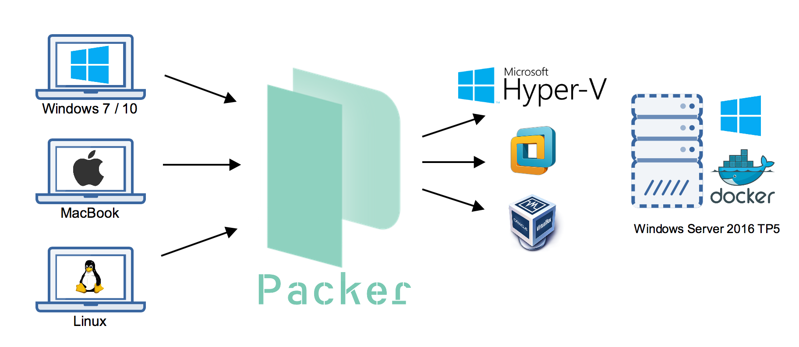

Back in June I have attended the DockerCon in Seattle. Beside lots of new features in Docker 1.12 we heard about Windows Server and Docker and upcoming features in the Windows Docker engine.
Another highlight for me after the conference was a visit at the Microsoft Campus in Redmond to meet the Windows Container team around Taylor Brown. After a meeting and having lunch we talked about making my Packer template for a Windows Server 2016 TP5 Docker VM work with Hyper-V. At that time my packer template supported only VirtualBox and VMware with a blog post describing how to build it.
So Patrick Lang from Microsoft and I started to have a look at the pull request mitchellh/packer#2576 by Taliesin Sisson that adds a Hyper-V builder to Packer. After a couple of days (already back to Germany working in different time zones) we improved the template through GitHub and finally got it working.
packer build, vagrant up
If you haven't heard about Packer and Vagrant let me explain it with the following diagram. If you want to create a VM from an ISO file you normally click through your hypervisor UI and then follow the installation steps inside the VM.

With Packer you can automate that step building a VM from an ISO file, put all steps into a Packer template and then just share the template so others can just run
packer build template.json
In our case the output is a Vagrant box. That is a compressed VM ready to be used with the next tool - Vagrant. It takes a Vagrant box, creates a copy of it to turn it on so you can work again and again with the same predefined VM that was built by Packer. You want to turn your VM on? Just type
vagrant up
You want to stop the VM after work? Just type
vagrant halt
You want to try something out and want to undo all that to start over with the clean state. Just destroy it and start it again.
vagrant destroy
vagrant up
There are much more commands and even snapshots can be used. The advantage is that you don't have to know all the buttons in your hypervisor. Both Packer and Vagrant are available for Windows, Mac and Linux and also support multiple hypervisors and even cloud providers.
So you only have to learn one or both of these tools and you're done if you have to work with VM's.
Adding Hyper-V builder
The Packer template for a VM has one or more builder sections. The Hyper-V section looks like this and contains the typical steps
- Adding files for a virtual floppy for the first boot
- Defining disk size, memory and CPU's
- How to login into the VM
{
"vm_name":"WindowsServer2016TP5Docker",
"type": "hyperv-iso",
"disk_size": 41440,
"boot_wait": "0s",
"headless": false,
"guest_additions_mode":"disable",
"iso_url": "{{user `iso_url`}}",
"iso_checksum_type": "{{user `iso_checksum_type`}}",
"iso_checksum": "{{user `iso_checksum`}}",
"floppy_files": [
"./answer_files/2016/Autounattend.xml",
"./floppy/WindowsPowershell.lnk",
"./floppy/PinTo10.exe",
"./scripts/disable-winrm.ps1",
"./scripts/docker/enable-winrm.ps1",
"./scripts/microsoft-updates.bat",
"./scripts/win-updates.ps1"
],
"communicator":"winrm",
"winrm_username": "vagrant",
"winrm_password": "vagrant",
"winrm_timeout" : "4h",
"shutdown_command": "shutdown /s /t 10 /f /d p:4:1 /c \"Packer Shutdown\"",
"ram_size_mb": 2048,
"cpu": 2,
"switch_name":"{{user `hyperv_switchname`}}",
"enable_secure_boot":true
},
Packer can also download ISO files from a download link to make automation very easy.
The installation of a Windows Server 2016 VM can be automated with an Autounattend.xml file. This file contains information to setup the Windows VM until the WinRM service is up and running and Packer can login from the host machine to run further provision scripts to setup the VM with additional installations.
In case of the Windows Server 2016 TP5 Docker VM we additionally install Docker 1.12 and pull the Windows base OS docker images into the VM.
All these steps defined in the Packer template build a good Vagrant box to have Docker preinstalled with the base docker image as it takes some time to download it the first time.
So after a vagrant destroy you still have the Windows OS docker images installed and can work with a clean installation again. Only from time to time when there is a new OS docker image version you have to rebuild your Vagrant box with Packer.
Build the Hyper-V Vagrant box
To build the Vagrant box locally on a Windows 10 machine you only need the Hyper-V feature activated and you need a special version of packer.exe (notice: with choco install packer you only get the upstream packer where the hyperv builder is not integrated yet). The packer.exe with hyperv builder can be downloaded at https://dl.bintray.com/taliesins/Packer/.
Clone my packer template from GitHub and build it with these commands:
git clone https://github.com/StefanScherer/packer-windows
cd packer-windows
packer build --only=hyperv-iso windows_2016_docker.json
This will take some time downloading and caching the ISO file, booting, installing the software and pulling the first Docker images.
Share Vagrant boxes with Atlas
Another advantage of Vagrant is that you can share Vagrant base boxes through Atlas, a service by HashiCorp. So only one has to run Packer and build the Vagrant box and provide it for other team members or the community.
Others can create a Vagrantfile with the box name of one of the provided Vagrant boxes. That name will be used at the first vagrant up to download the correct Vagrant box for the hypervisor to be used.
Even Microsoft has its first Vagrant box at Atlas which can be used with VirtualBox only at the moment. But it is only a matter of time that more Hyper-V based Vagrant boxes will show up in Atlas, also boxes for other hypervisors.
If you don't have a Vagrantfile you even can create a simple one to start a new test environment with two commands and a suitable Vagrant box from Atlas.
vagrant init Microsoft/EdgeOnWindows10
vagrant up --provider virtualbox
Vagrant itself can log into the VM through WinRM and run further provision scripts to setup a good development or test environment. It is just a decision what to install in a Vagrant box with Packer and what to install with Vagrant afterwards. You decide which flexibility you want or if you prefer a faster vagrant up experience with a full provisioned Vagrant box that was built with a longer running Packer build once.
docker-windows-box
If you are looking for a test environment for Windows Docker containers you might have a look at my docker-windows-box GitHub repo that installs Git and some additional Docker tools to get started working on some Windows Dockerfiles.
Conclusion
I'm happy that there is a Hyper-V builder for Packer that really works. Vagrant already has a Hyper-V provider built in so you can have the same experience running and working with VM's as others have with VMware or VirtualBox.
With a such a TP5 Vagrant box it is very easy to get in touch with Windows Docker Containers, regardless if you are working on Windows 10 with Hyper-V or from your Mac or Linux machine with another hypervisor.

Please leave a comment if you have questions or improvements or want to share your thoughts. You can follow me on Twitter @stefscherer.